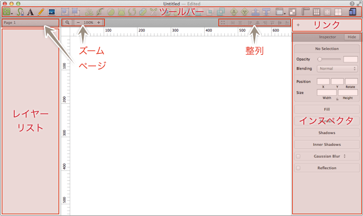
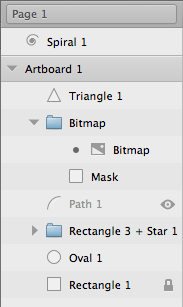
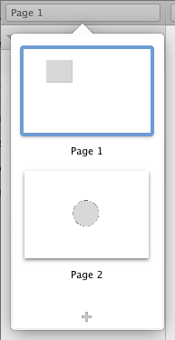
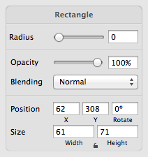
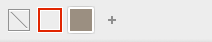

Sketch.app Advent Calender 2013 1日目の記事です。このAdvent CalendarではSkech.appのいろいろを解説していきますので、よろしくお願いします。（記事の一覧ページ）
初回は軽めにアプリケーションウィンドウについて解説します。
Sketchの基本。というSketch（Sketch 3）の基本操作にフォーカスした電子書籍をリリースしました。詳しくはこちらの「Sketchの基本。」のページをご覧ください。
この記事はSketch 2を元にした記事です。最新版の動作とは異なる可能性が高いため、参考程度にご覧ください。
今回は「見ればわかるやん」レベルの解説ですが、順番に解説していきます。  ## ツールバー いわゆるショートカットアイコンですね。ご多分に漏れず、コンテキストメニューから表示の仕方や表示するツールのカスタマイズができます。 ## レイヤーリスト アートボードやオブジェクトのリストです。Command ＋ Option ＋ 1でパネルの表示/非表示を切り替えます。ページ管理もこのパネルから行います。
リストには、アートボードとオブジェクトの一覧と、その状態が表示されます。ドラッグによる順番の入れ替えや、コンテキストメニューからいろいろと操作ができます。
ページ

レイヤーリストの上にあるプルダウンメニューからページを管理します。Fireworksのように、1つのドキュメントに複数のページを持つことができます。
インスペクタ

サイズや色・線など、オブジェクトに応じたスタイルの設定ができます。選択しているオブジェクトで内容が変わります（画像はRectangleシェイプを選択中）。
Command ＋ Option ＋ 2でパネルの表示/非表示を切り替えます。（ショートカットの2を3にすると、レイヤーとインスペクタの表示/非表示を切り替えます）
リンク

オブジェクトのスタイリングを管理するパネルです。ここからスタイルを適用するとスタイルがリンクされ、プロパティを変更をすると、リンクされているオブジェクトのプロパティも変更になります。
画像では2つ登録されている状態ですが、新しいドキュメントでは、リンクを設定していないので＋マークのみになります。
その他
表示倍率や整列の他、状況に応じて表示されるものがあります。
フルスクリーンモードやRetinaへの対応、タイトルバーからドキュメント名の変更や保存場所に移動など、OSの機能にも対応しています。